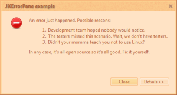
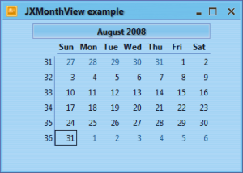
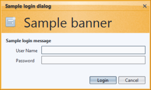
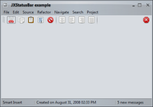
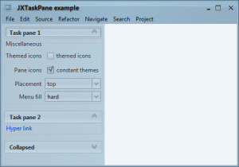
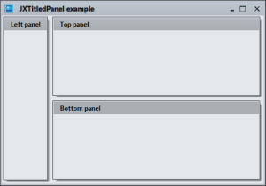

Click on the button below to launch a signed WebStart application that shows the available Substance SwingX features.
You can switch Substance skins via the "Look & feel" menu. In addition, you can test the support for high-resolution monitors via the font size slider in the application status bar.
The test application requires a number of jar files. These are bundled in the WebStart application, and can be downloaded separately from the "Documents & Files" section of the project site.
substance-swingx-tst.jar - contains
the test application and its resources. The main class is
test.TestSwingXFrame.substance.jar - the Substance
look-and-feel itself.forms-1.2.0.jar -
FormLayout from JGoodies. Is used
to layout most of the panels.swingx.jar -
SwingX. Contains the SwingX
controls that are tested in this application.substance-swingx.jar -
Substance plugin
for SwingX. Is used to provide consistent appearance for SwingX controls.Here are a few screenshots of SwingX components under different Substance skins.
     